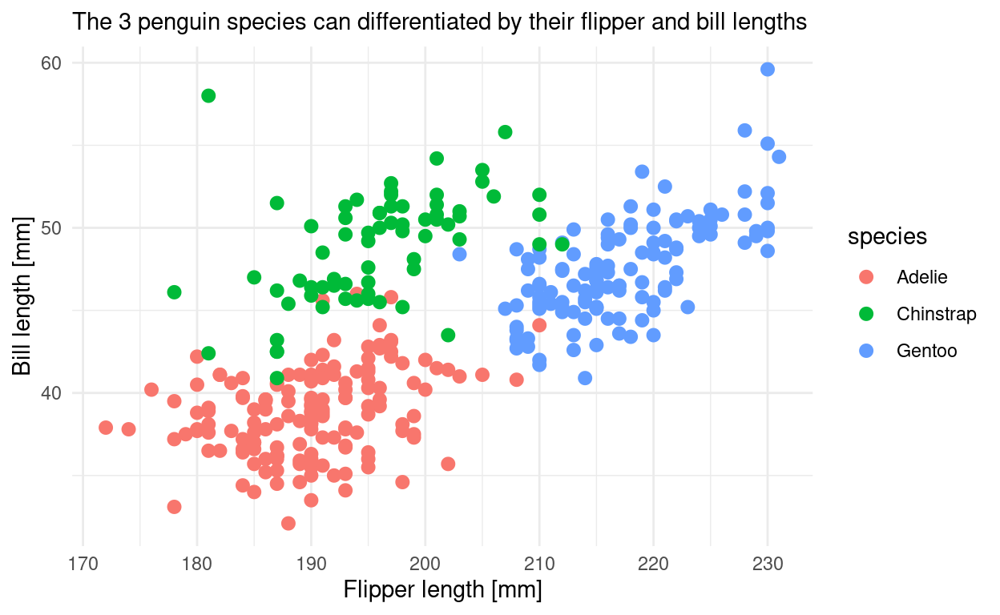

Table of Contents
Materials
Video
Watch today’s video here:
Slides
Hover over the slides and press f for full screen. Press ? for a list of keyboard shortcuts.
knitr::include_url("slides1.html")Script
What is this Course about?
Throughout your scientific career — and potentially outside of it — you will encounter various forms of data. Maybe you do an experiment and measured the fluorescence of a molecular probe, or you simply count the penguins at your local zoo. Everything is data in some form or another. But raw numbers without context are meaningless and tables of numbers are not only boring to look at but often hide the actual structure behind the numbers. In this course you will learn to handle different kinds of data. You will learn to create pretty and insightful visualizations, compute different statistics on your data and also what these statistical concepts mean. From penguins to p-values, I got you covered.
The course will be held in English, as the concepts covered will directly transfer to the research you do and the papers you will read and write where the working language is English. That being said, feel free to ask questions in any language that I understand, so German is also fine. My Latin is a little rusty, thought.
In this course, we will be using the programming language R. R is a language particularly well suited for data analysis because it was initially designed by statisticians and the interactive nature of the language makes it easier to get started. So don’t fret if this is your first encounter with programming, we will take one step at a time.
So let me be upfront. I am going to cheat a little. We are going to start with a couple of things that R is really, really good at to get you excited, before we dive into some potentially confusing details of the inner workings.
First Things First: Installing R
But I was getting ahead of myself. First, we need to install R. You can download the installer for your operating system here: https://cran.r-project.org/. Feel free to post a question if you get stuck. This already gives you the ability to execute R code or use the interactive R console, but it is way more comfortable to use R inside of a so called IDE (Integrated Development Environment). IDEs give you neat things like autocompletion, a window for your plots and a help panel. The main IDE for R is called RStudio. We will be using it for this course and you can download it here: https://www.rstudio.com/products/rstudio/download/#download
Please refer to the video for a walkthrough of the different RStudio panes.
Executing R Code
You can now execute commands in the R console in the bottom left. For example:
1 + 1
[1] 2Or generate the numbers from one to 10:
1:10
[1] 1 2 3 4 5 6 7 8 9 10But I rarely type directly into the console. Because we want our results to be reproducible, we write our code in a script first so that the next person1 can see what we did and replicate our analysis. You will see that reproducibility is quite near and dear to me, so it will pop up once or twice. And as scientists, I am sure you understand the importance.
To create a new script, click the little button in the top left corner. In this script you can type regular R code, but it won’t get executed straight away. To send a line of code to the console to be executed, hit Ctrl+Enter. Go ahead, try it with:
plot(1:10)You just created your first plot in R! We plotted values of the vector 1:10 vs. it’s index (=the number of the entry). A vector is an ordered collection of things which have the same datatype, where a datatype is something like numbers (numeric), text (character also called string), whole numbers (integer).
Your code can have comments to tell your future self why you wrote a piece of code the way you did. Any line starting with the number symbol # will be ignored by R.
# This line will be ignored
43 - 1 # as will be the part after this #, but not before it
[1] 42For future reference, here are the basic datatypes of R
Basic Datatypes
Whole numbers (integer)
1L # denoted by LNumbers (numeric, double)
12
12.5Complex numbers (complex)
1 + 3i # denoted by the small i for the imaginary partText (character, string)
"It was night again."Logical values (boolean, logical)
TRUE
FALSESpecial types that mix with any other type:
# NULL for no value
NULL
# NA for Not Assigned
NANA is contagious. Any computation involving NA will return NA (because R has no way of knowing the answer):
NA + 1
[1] NA
max(NA, 12, 1)
[1] NAThere is also a concept called factors (factor) for categorical data, but we will talk about that later.
Variables
Often, you will want to store the result of a computation for reuse, or to give it a sensible name and make your code more readable. This is what variables are for. We can assign a value to a variable using the assignment operator <- (In RStudio, there is a shortcut for it: Alt+Minus):
my_numbers <- 1:10Executing the above code will not give you any output, but when you use the name of the variable, you can see its content:
my_numbers
[1] 1 2 3 4 5 6 7 8 9 10And you can do operations with those variables:
x <- 41
y <- 1
x + y
[1] 42NOTE Be careful about the order of execution! R enables you to work interactively and to execute the code you write in your script in any order with Ctrl+Enter, but when you execute (=“source”) the whole script, it will be executed from top to bottom.
Furthermore, code is not executed again automatically, if you change some dependency of the expression later on. So the second assignment to x doesn’t change y.
x <- 1
y <- x + 1
x <- 1000
y
[1] 2Variable names can contain letters (capitalization matters), numbers (but not as the first character) and underscores _.2
# snake_case
main_character_name <- "Kvothe"
# or camelCase
bookTitle <- "The Name of the Wind"
# you can have numbers in the name
x1 <- 12Functions and Vectors
Functions are the main workhorses of our data analysis. For example, there are mathematical functions, like sin, cos etc.
sin(x = 0)
[1] 0Functions take arguments (sometimes called parameters) and sometimes they also return something. The sin function takes just one argument x and returns its sine.
Note, that the = inside the function parenthesis gives x = 0 to the function and has nothing to do with any x defined outside of the function. The parameter x used in the function is separate from any x you might have defined outside of the function. E.g.
x <- 10
sin(x = 0)
[1] 0
# x is still 10
x
[1] 10If you want to know more about a function in R, execute ? with the function name or press F1 with your mouse over the function. This is actually one of the most important things to learn today, because the help pages can be incredibly helpful.
?sinWe can pass arguments by name or by order of appearance
sin(x = 12)
sin(12)The basic datatypes in R are all vectors, which means they can contain more than one entry. You can create a vector by combining things of the same data type with the function c for combine.
x <- c(1, 2, 3, 4, 5, 6)
x
[1] 1 2 3 4 5 6The basic mathematical operations in R are vectorized by default i.e. they are performed on every element of the vector. Here, every element is multiplied by 2 and the result printed to the console.
x * 2
[1] 2 4 6 8 10 12The original vector x was not changed in doing so.
x
[1] 1 2 3 4 5 6But we could have by assigning the result back to x, thus overwriting its previous content. The right hand side (RHS) is executed first:
x <- x * 2Now x changed:
x
[1] 2 4 6 8 10 12A handy way of creating vectors of numbers is with the : operator to specify a range of values:
1:5
[1] 1 2 3 4 5Or using the seq function with some additional (optional parameters):
seq(from = 1, to = 10, by = 2)
[1] 1 3 5 7 9Now you: Look at the documentation/help page for
seqand find out how to create a vector of all even numbers from 1 to 100.
Making our lives easier: Functions and Packages
You just learned about the functions sin and seq and briefly used the function plot (which didn’t return anything but instead had the side effect of printing a plot3). But wait, there is more! Not only in the sense that there are more functions in R (what kind of language would that be with only two verbs?!), but also in a more powerful way:
We can define our own functions! The syntax (<- grammar for programming languages) is as follows.
name_for_the_function <- function(parameter1, parameter2) { # etc.
# body of the function with some calculations:
result <- parameter1 + parameter2
# Something the function should return to the caller
return(result)
}The function ends when it reaches the return keyword. It also ends when it reaches the end of the function body and implicitly returns the last expression. So we could have written it a bit shorter and in fact you will often see people omitting the explicit return at the end:
add <- function(x, y) {
x + y
}And we can call our freshly defined function:
add(23, 19)
[1] 42Got an error like Error in add(23, 19) : could not find function "add"? Check that you did in fact execute the code that defines the function (i.e. put your cursor on the line with the function keyword and hit Ctrl+Enter.).
Now you: Define a function that takes one argument, a vector of numbers, devides each element by the length of the vector (hint:
lengthis the function to get the lenght) and returns the resulting scaled vector.
You are not the only one using R. There is a welcoming and helpful community out there. Some people also write a bunch of functions and put them together in a so called package. And some people even went a step further. The tidyverse is a collection of packages that play very well together and also iron out some of the quirkier ways in which R works (Wickham et al. 2019). They provide a consistent interface to enable us to do more while having to learn less special cases. The R function install.packages("<package_name_here>") installs packages from CRAN a curated set of R packages.
The Tidyverse
Go ahead and install the tidyverse packages with
install.packages("tidyverse")This is one exception to our effort of having everything that we run in our script and not just in the console. We don’t want R trying to install the package every time we run the script, as this needs to happen only once. So you can either turn it into a comment, delete it from the script, or only type it in the console. You can also use RStudio’s built-in panel for package installation.
To make the functions from a package available to your R session, run library with the name of the package.
library(tidyverse)The convention is, to keep all library-calls at the top of your script so that you and others can see straight away, which packages are needed.
Literate Programming: Rmarkdown

There is another package I would like you to install. It is called Rmarkdown.
install.packages("rmarkdown")Rmarkdown enables you to combine text with R code and then produce a range of output formats like pdf, html, word documents, presentations etc. In fact, this whole website, including the slides, was created using Rmarkdown. Sounds exciting? Let’s dive into it! Open up a new Rmarkdown document with the file extension .Rmd from the New File menue in the top left corner of RStudio: File → New File → R Markdown and choose html as the output format. I particularly like html because you don’t have to worry about page breaks and it easily works on screens of different sizes like your phone.
An Rmarkdown document consists of three things:
- Metadata:
Information about your document such as the author or the date in a format calledYAML. This YAML header starts and ends with three minus signs---. - Text:
Regular text is interpreted as markdown, meaning it supports things like creating headings by prefixing a line with#, or text that will be bold in the output by surrounding it with**. - Code chunks:
Starting with ```{r} and ending with ``` (backticks). They will be interpreted as R code. This is where you write the code like you did in the.Rscript file. You can insert new chunks with the button on the top right of the editor window or use the shortcut Ctrl+Alt+i.
Use these to document your thoughts alongside your code when you are doing data analysis. Future you (and reviewer number 2) will be happy! To run code inside of chunks, use, the little play button on the chunk, the tried and true Ctrl+Enter to run one line or Ctrl+Shift+Enter to run the whole chunk. Your chunks can be as large or small as you want, but try to maintain some sensible structure.
A Grammar of Graphics and the Palmer Penguins
The Palmer Penguins
See (Horst, Hill, and Gorman 2020)

penguins <- palmerpenguins::penguins
penguins
# A tibble: 344 x 8
species island bill_length_mm bill_depth_mm flipper_length_…
<fct> <fct> <dbl> <dbl> <int>
1 Adelie Torge… 39.1 18.7 181
2 Adelie Torge… 39.5 17.4 186
3 Adelie Torge… 40.3 18 195
4 Adelie Torge… NA NA NA
5 Adelie Torge… 36.7 19.3 193
6 Adelie Torge… 39.3 20.6 190
7 Adelie Torge… 38.9 17.8 181
8 Adelie Torge… 39.2 19.6 195
9 Adelie Torge… 34.1 18.1 193
10 Adelie Torge… 42 20.2 190
# … with 334 more rows, and 3 more variables: body_mass_g <int>,
# sex <fct>, year <int>Translating Data into Visualizations
ggplot(penguins, aes(flipper_length_mm, bill_length_mm, color = species)) +
geom_point(size = 2.5) +
labs(x = "Flipper length [mm]",
y = "Bill length [mm]",
subtitle = "The 3 penguin species can differentiated by their flipper and bill lengths") +
theme_minimal() +
NULL
The Community: There to catch You.

Resources
Rmarkdown
- https://rstudio.com/wp-content/uploads/2016/03/rmarkdown-cheatsheet-2.0.pdf
- https://rstudio.com/wp-content/uploads/2015/03/rmarkdown-reference.pdf
- https://bookdown.org/yihui/rmarkdown-cookbook/
- https://bookdown.org/yihui/rmarkdown/
- https://pandoc.org/MANUAL.html#pandocs-markdown
- https://reproducible-analysis-workshop.readthedocs.io/en/latest/6.RMarkdown-knitr.html
- https://rmarkdown.rstudio.com/index.html
“Artwork by @Allison_horst.” 2020. https://github.com/allisonhorst/stats-illustrations.
Horst, Allison, Alison Hill, and Kristen Gorman. 2020. Palmerpenguins: Palmer Archipelago (Antarctica) Penguin Data. Manual.
Wickham, Hadley, Mara Averick, Jennifer Bryan, Winston Chang, Lucy D’Agostino McGowan, Romain François, Garrett Grolemund, et al. 2019. “Welcome to the tidyverse.” Journal of Open Source Software 4 (43): 1686. https://doi.org/10.21105/joss.01686.